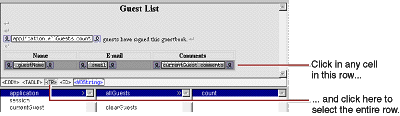

| PATH |

Now you'll create a table to display the entire list of guests in the GuestList component. To do so, you'll use a dynamic element called a repetition (an instance of the WORepetition class). Repetitions are one of the most important elements in WebObjects, since it is quite common for applications to display repeated data (often from databases) when the amount of data to be displayed isn't known until runtime. Typically, a repetition is used to generate items in a list or a browser, multiple rows in a table, or multiple tables.
A repetition can contain any other elements-either static HTML or dynamic WebObjects elements. In the GuestList component, you'll create a repetition that contains a table row.
You'll bind the allGuests array
to the WORepetition's list attribute.
This tells WebObjects to generate the elements in the repetition
once for each item in the array. Each time WebObjects iterates through
the array, it sets the repetition's item attribute
to the current array object. You bind item to
the variable currentGuest and
use currentGuest's
fields to bind the elements inside the repetition (such as WOStrings).
At runtime, the table will consist of one row (displaying name,
e-mail address, and comments) for each guest.
Main.wo).You have just copied the table from Main into GuestList.
It has all the same properties, including the bindings. The WOStrings
in the table are still bound to instance variables of currentGuest.
Since currentGuest is
a component variable defined in Main, it isn't accessible from
GuestList. Therefore, you need to declare it here.

When you wrap a repetition around a table row in this way, the WORepetition symbol doesn't appear in the table. Instead, the row appears in blue. For additional examples of using repetitions, see "Creating a WebObjects Database Application".
application in
the first column.allGuests to
the <WORepetition> tag in the path view.list.
This binds application.allGuests to
the WORepetition's list attribute.currentGuest to
the repetition's item attribute.By
using the name currentGuest for
the item attribute, you
are taking advantage of the fact that the strings in your table
are already bound to the fields of currentGuest.
You
now have finished implementing the repetition. When the table is
generated, it will have one row for each item in the allGuests array.
Note: In
this case, you don't have to rebuild or relaunch your application
in order to test it. Building is required only when you have made
changes to Java code. If you modify a component only, the changes
take effect even if the application is already running.
© 2001 Apple Computer, Inc.